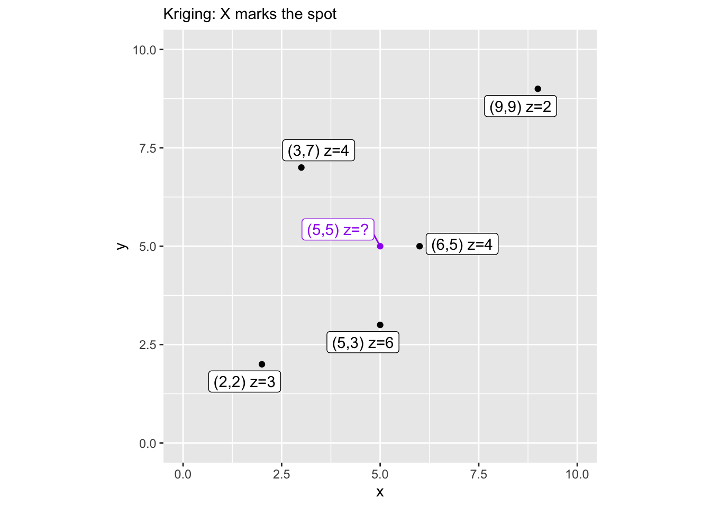
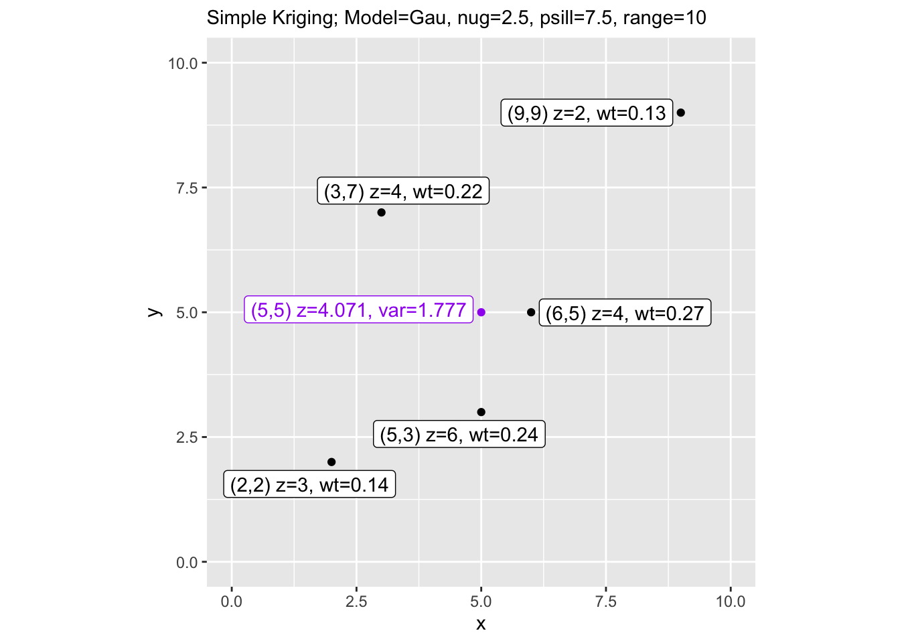
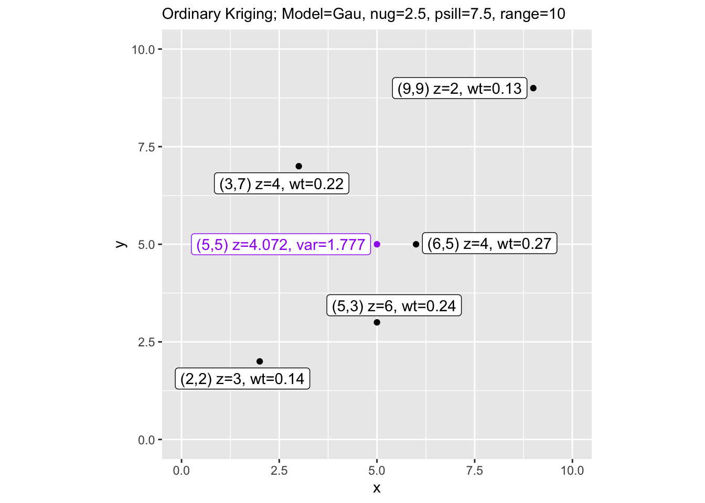

Aside: Kriging Variance By Hand
9.8 What’s Going On Here
When we use gstat to krige, we hand it a variogram model and some data and it hands back predictions and variances. That’s great. But it can feel like a black box. This aside cracks it open.
The goal is simple: take a small toy dataset, calculate kriging weights and prediction variance by hand using matrix algebra, and then check our work against gstat. If we did it right, the numbers should match exactly.
You don’t need to do anything here and most of what follows is linear algebra dressed up in geostatistical clothing. But if you’ve ever wondered what gstat is actually solving when it does kriging, this is it.
This example is adapted from Prof. Ashton Shortridge at MSU, who was kind enough to share it. It’s based on Box 6.2 in Burrough & McDonnell, Principles of GIS (1998), though with a corrected typo from the book. As Ashton put it when I asked to share it:
“Unfortunately MSU, in its wisdom, decided to eliminate home pages…When I have time (hah!), I’d like to post the course stuff somewhere public. For now I’ll just pass along the updated manual kriging pages - feel free to use as you see fit.”
What a cool guy.
9.9 The Setup
We need a few packages and a toy dataset. Five points with known values (z) scattered in a 10x10 space, and we want to predict z at the location (5,5).
Let’s map it so we can see what we’re working with. The purple point is our prediction target.
dat2 <- rbind(dat, data.frame(x=5, y=5, z="?"))
dat2$lbls <- paste("(", dat2$x, ",", dat2$y, ") z=", dat2$z, sep="")
dat2$cols <- factor(c(rep("black",5), "purple"))
ggplot(data=dat2, mapping=aes(x=x, y=y, col=cols, label=lbls)) +
geom_point() +
geom_label_repel() +
lims(x=c(0,10), y=c(0,10)) +
scale_color_identity() +
coord_equal() +
labs(subtitle = "Kriging: X marks the spot")
9.10 The Covariance Functions
Kriging works in covariance space rather than semivariance space, so we need covariance functions corresponding to the variogram models we already know – spherical, exponential, and Gaussian. These functions take a matrix of distances and the variogram parameters (nugget, sill, range) and return covariances.
spher.covar <- function(dist, nugget, sill, range) {
sigma <- sill + nugget
covar <- matrix(0, nrow=nrow(dist), ncol=ncol(dist))
for (i in 1:nrow(covar)) {
for (j in 1:ncol(covar)) {
if (dist[i,j] > range)
covar[i,j] <- 0
else if (dist[i,j] == 0)
covar[i,j] <- sigma
else covar[i,j] <- sigma - (nugget + (sigma - nugget) *
(((3*dist[i,j])/(2*range)) - ((dist[i,j]^3)/(2*range^3))))
}
}
return(covar)
}
exp.covar <- function(dist, nugget, sill, range) {
sigma <- sill + nugget
covar <- matrix(0, nrow=nrow(dist), ncol=ncol(dist))
for (i in 1:nrow(covar)) {
for (j in 1:ncol(covar)) {
if (dist[i,j] == 0) {
covar[i,j] <- sigma
} else {
covar[i,j] <- sill * exp(-dist[i,j]/range)
}
}
}
return(covar)
}
gauss.covar <- function(dist, nugget, sill, range) {
sigma <- sill + nugget
covar <- matrix(0, nrow=nrow(dist), ncol=ncol(dist))
for (i in 1:nrow(covar)) {
for (j in 1:ncol(covar)) {
if (dist[i,j] == 0) {
covar[i,j] <- sigma
} else {
covar[i,j] <- sill * exp(-dist[i,j]^2/range^2)
}
}
}
return(covar)
}9.11 Building the Covariance Matrix and Vector
We need two things: K, a 5x5 matrix of covariances between all pairs of observed points, and k, a vector of covariances between each observed point and our prediction location (5,5). We use rdist() from the fields package to compute the distances.
dmat <- round(rdist(cbind(dat$x, dat$y)), digits=4) # distances among observed points
dvec <- round(rdist(cbind(dat$x, dat$y), cbind(5,5)), digits=4) # distances to prediction locationWe’ll use a Gaussian variogram model with these parameters – chosen to be reasonable for our toy data, not fit to it.
9.12 Simple Kriging
Simple kriging (SK) assumes the mean of the process is known. Here we use the sample mean as a stand-in. The kriging weights are \(\mathbf{w} = \mathbf{K}^{-1}\mathbf{k}\), and the prediction is a weighted sum of deviations from the mean, added back to the mean. The kriging variance tells us how uncertain we are.
9.13 Ordinary Kriging
Ordinary kriging (OK) doesn’t assume we know the mean – it estimates it from the data. To enforce the constraint that the weights must sum to 1, we augment the covariance matrix with a row and column of ones and introduce a Lagrange multiplier. The matrix grows from 5x5 to 6x6 and we solve the augmented system.
9.14 Checking Against gstat
Now we verify our hand calculations against gstat. If the math is right, the estimates and variances should match.
dat.vgram <- vgm(model=vmod, psill=sill, nugget=nugget, range=range)
est2.sk <- krige(z~1, ~x+y, data=dat, model=dat.vgram,
newdata=data.frame(x=5,y=5), beta=mean(dat$z))## [using simple kriging]## [using ordinary kriging]res.df <- data.frame(
type = c('manual SK', 'gstat SK', 'manual OK', 'gstat OK'),
est = c(round(est.sk, 3), round(est2.sk$var1.pred, 3),
round(est.ok, 3), round(est2.ok$var1.pred, 3)),
var = c(round(var.sk, 3), round(est2.sk$var1.var, 3),
round(var.ok, 3), round(est2.ok$var1.var, 3))
)
res.df## type est var
## 1 manual SK 4.071 3.157
## 2 gstat SK 4.071 3.157
## 3 manual OK 4.072 3.157
## 4 gstat OK 4.072 3.157They match. That’s the point. gstat is solving the same system of equations – we just did it by hand to see how the sausage is made.
9.15 The Results
Finally, let’s visualize the results with the weights and prediction variance labeled on the map.
dat3 <- dat2
dat3$lbls <- paste("(", dat3$x, ",", dat3$y, ") z=", dat3$z,
", wt=", c(round(wts.sk, 2)[,1], ""), sep="")
dat3$lbls[6] <- paste("(5,5) z=", round(est.sk,3),
", var=", round(sqrt(var.sk), 3), sep="")
ggplot(data=dat3, mapping=aes(x=x, y=y, col=cols, label=lbls)) +
geom_point() +
geom_label_repel() +
lims(x=c(0,10), y=c(0,10)) +
scale_color_identity() +
coord_equal() +
labs(subtitle = paste("Simple Kriging; Model=", vmod,
", nug=", nugget, ", psill=", sill,
", range=", range, sep=""))
dat3$lbls[6] <- paste("(5,5) z=", round(est.ok,3),
", var=", round(sqrt(var.ok), 3), sep="")
ggplot(data=dat3, mapping=aes(x=x, y=y, col=cols, label=lbls)) +
geom_point() +
geom_label_repel() +
lims(x=c(0,10), y=c(0,10)) +
scale_color_identity() +
coord_equal() +
labs(subtitle = paste("Ordinary Kriging; Model=", vmod,
", nug=", nugget, ", psill=", sill,
", range=", range, sep=""))
Notice that ordinary kriging gives slightly higher variance than simple kriging. That makes sense – OK has to estimate the mean from the data rather than assuming it’s known, so there’s an additional source of uncertainty baked into the prediction.